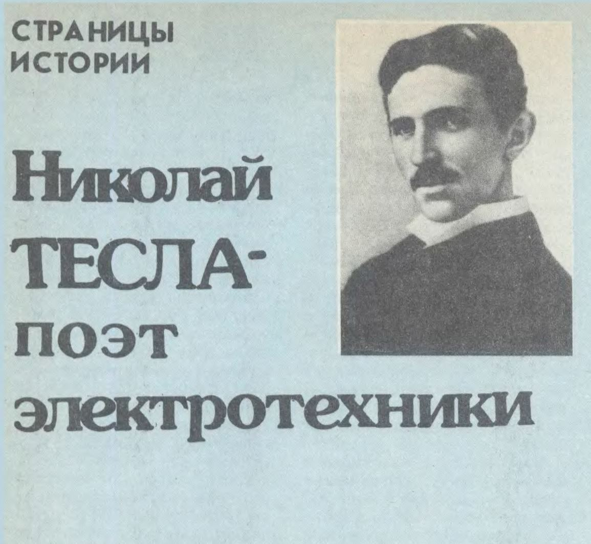

страницы истории...
Гениальный учёный и изобретатель Никола Тесла вошёл в историю цивилизации как первооткрыватель вращающегося магнитного поля, создатель многофазной системы переменного тока, предопределившей генеральную линию развития электроэнергетики, как изобретатель асинхронного электро-двигателя, этой рабочей лошади современной индустрии. Он же рахработал конструкции электромеханических генераторов высокой частоты, изобрел резонансный трансформатор (осциллятор), заложив тем самым фундамент техники высоких частот. Идея и первые модели газосветных ламп также заслуга Теслы. На его счету более ста американских патентов, главным образом в области электротехники. Четыре привилегии выданы в 1900-1907 гг. Министерством финансов России.
Серб по национальности, уроженец Хорватии, Тесла родился 10 июля 1856 г. в семье православного священника. Учился в Высшем техническом училище в Граце, затем в Пражском университете. Работал инженером в Будапеште, Париже, Страсбурге. В 1884 году эмигрировал в США, где работал на заводах Эдисона и Вестингауза, некоторое время сам был предпринимателем, в основном занимался научным исследованиями и изобретательством. Тесла был бессребреником, семьи не имел, умер 7 января 1943 г. в нью-Йорке в полной нищете.
Исследуя токи высокой частоты, уверовав в безграничные возможности электричества, Тесла загорелся дерзкой мечтой о передачи электроэнергии без проводов на большие расстояния. в феврале 1892 г. он прочитал в Лондоне две лекции о токах высокой частоты с демонстрацией опытов. Эти выступления вызвали огромный интерес среди британской научной общественности. Известный английский физик У. Крукс, пожалуй, одним из первых ясно представил себе, какие перспективные таятся за новациями Теслы. В том же году Крукс писал в научном журнале: Лучи света не могут проникать ни через стену, ни, как мы слишком хорошо знаем, через лондонский туман. Но электрические лучи... с длинной волны в один ярд и более легко проникнут через такие среды, являющиеся для них прозрачными. в таком случае здесь раскрывается ошеломляющая возможность телеграфирования без проводов.
Через год в феврале 1893 г, выступая во Франклиновском институте в Филадельфии, Тесла говорил: В связи с резонансными эффектами... я хотел бы сказать несколько слов о предмете, который все время у меня на уме (курсив мой Г.Ц) и который затрагивает благосостояние всех нас. Я имею в виду передачу осмысленных сигналов,а быть может, даже расстояние вовсе без помощи проводов. С каждым днем я все более убеждаюсь в практической осуществимости этой схемы, и хотя я знаю что большинство ученых не верит, что такие результаты могут быть реализованы в ближайшее время, все же я думаю, все согласятся с тем что прогресс, достигнутый за последние годы многими исследованиями, может поощрить дальнейшее обдумывание и эксперименты в этом направлении. Моё убеждение установилось так прочно, что я расмматриваю этот проект передачи энергии или сигналов без проводов уже не просто как теоретическую возможность, а как весьма серьезную проблему электротехники, которая должна быть решена со дня на день.
Тесла как в воду глядел. Ведь прошло немногим более двух лет со дня этой знаманательной лекции, и 7 мая 1895 года в далеком от Филадельфии Петербурге А.С Попов излочил результаты своих опытов и продемонстрировал в действии "прибор для обнаружения и регестрирования электрических колебаний от герцевского вибратора. А летом 1986 г. независимо от А.С. Попова, итальянец г.МАркони запатентовал в Англии свое устройство радиосвязи, в передатчике которого был использован вибратор А. Риги. На рубеже двух столетий беспроволочный телеграф, преодолевая все более дальние расстояния, вошел в технический обиход, дав жизнь новой технологии радиотехнике. В этом заслуга многих и многих талантливых ученых и инженеров из различных стран.
А что же Тесла? Каков его конкретный вклад в историю радио? Важнейшее его достижение в этой области - изобретение бессердечникового резонансного трансформатора, генерирующего токи высокой частоты при высоком напряжении. Существенной частью этого осцилятора был вращающиеся разрядник. В первые десятилетия радиотехники именно трансформатор Теслы использовался как источник излучения на передающих радиостанциях.
Первостепенное значение имела предложенная Теслой в 1893 г. антенна А.С Попова применивший ее впервые в саду Минного офицерского класса, неоднократно утверждал,что употребление мачты на станции отправления и на станции приёма для предачи сигналов с помощью электрических колебаний - заслуга Теслы. Ему оставалось только сконструировать приёмник, и он стал бы изобретателем радиосвязи. Этого нен случилось, ибо Тесла был увлечён более грандиозной задачей - передачей силовой электроэнергии на большие расстояние без проводов. В 1899 г. при поддержке состоятельныхv лиц и энтузиастов он основал в штате Колорадо в Скалистых горах высоковольтную лабораторию, в которой осуществивл сенсационный опыты для реализации свое-го замысла. С помошью мощностьюго осцилятора-радиопередат-чика он получал свервысокие он получил сверхсокие напряжение порядка 8 МБ.
Однако не достиг постоянной цели, места осталось мечтой, несоществленнй и в наши дни. Но это - тема для особой статьи.
Первопрохдцеми и весьма плодотворными, открывшими совершенно новую и широкую сферу применения радиоволн, были начаты в 1897 г. труды Теслы по конструриоравнию управлемых дистанционно автоматических механизмов, названных им самоходным автоматами или телеавтоматами. Именно с этих работ Теслы началось развитие телерадиоуправления - важнейшей в наше время составляющей ряда новейших отраслей техники.
Наиболее удачным и технически цельным телеавтоматом оказалось модель управляемого судна, которое в начале 1898 г. было опробовано на озере в окрестностях Нью-Йорка, а в сентябре демонстрировалось в бассейне на Электротехнической выставке в Мэдиссонсквер-гардене. Судно с палубой длиной 2м и шириной 0,6 м было полностью электрофицировано. Бортовая аккумуляторная батарея напряжением 60 В обеспечивала электроэнергией двигатели гребного винта, руля и других механизмов. К палубе крепилось два стержня с электролампами, по которым контролировалась работа электродвигателей. Приёмная аппаратура состояла из антенны, заземленной через металлическое днище лодки, и связанного с аентенной зернистого коге рера, действущего через электромагнитные реле и соответствую кинематику на исполнительные органы электрохода. Установленный на берегу пункт управлениф представлял собой передатчик-осцилятор с четырехпостовым переключаталем с помощью которого подавались импульсы на приёмное устройство лодки.
В дальнейшем Тесла развил свою схему и предложил устройство, работающее на двух и более частотах. Тесла потом писал его судно вызвало такую сенсацию, как ни одно другое его изобретение. Оно и понятно: в апреле 1898 г. разразилась испано-американская война, и фабриканты оружия не прочь были использовать новшество для радиоуправления торпедами.
Замыслы Теслы были шире и глубже, чем беспроводное управление "судами и экипажами" В декабре 1899 г отвечая на вопрос одного журналиста, Тесла говорил: Я убежден, что овладение электрической силой было великим достижением и очевидным благодеянием нашего века. Что касается будущего, то возможность управлять на расстоянии движением и другими действиями автоматом показывает, что машину можно приспособить работать так, будто она наделена разумом. И в другом месте: Уже давно я задумал построить такой автомат, который как и человек, реагировал бы на внешние воздействия.
Важно, чтобы автомат функционировапл наподобие разумного существа. Необходимо создать какой то элемент, соответствующий мозгу, который управлял бы работой автомата, искусно и рассудительно руководил бы его действиями при непредвиденных обстоятельствах. В тот год, когда Тесла делился этими провидческими мыслями, отцу кибернетики Н. Винеру бы-ло всего четыре года, а автор теории автоматов Дж.фон Нейман еще не родился... Тесле не удалось, да еще и не под силу было, в начале нашего века сконструировать робот. Это выпало на долю следущего поколения. Но приоритет телеуправления остается за ним.
Ещё одна важная отрасль радиотехники связана с именем Николы Тесла. Имеется в виду радиолокация. Еще в 1900 г. в одной из журнальной статей и в брошюре "Глобальная система" Тесла высказал вполне аргументированную мысль, что по аналогии с акустическим эхом можно добится отражения и приёма также и электромагнитных волн, что позволит определять точное местоположение нетолько земных, но и небесных обьектов. Он вернулся к этой проблеме в августе 1917 г, когда обьявленная Германией неограниченая подводная война достигла небывалых масштабов и в масштабов и в странах Антанты усиленно изыскивали средства противолодочной борьбы. Существует возможность определить место- нахождение подводной лодки с помошью электрмагнитных волн - писал Тесла - Если мы в ничтожно малую долю секунды направим от осциллятора сноп концентрированных волн сверхвысокой частоты и если после отражения от препятствий - подводной лодки - мы сделаем их видимыми на флуоресцирующих экранах, установленных как на судне с излучателем, так и на другом корабле, то мы, таким образом, сможем определить ее месторасположение... Эти волны должны быть ультракороткими и обладать большой мощностью